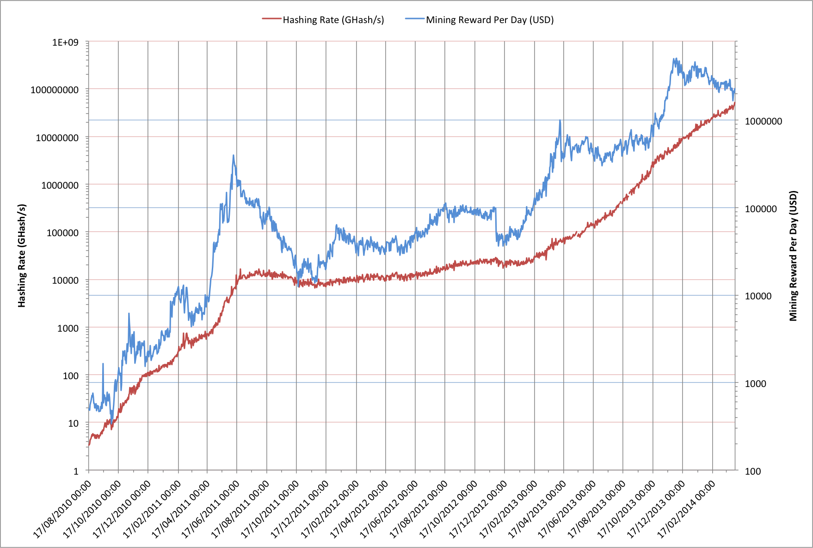

Bitcoin mining can be a very profitable activity. It’s good that it is because Bitcoin, as a system, only works because of the mining activity; it’s the mining that ensures the transactions actually take place. Just how much money does it generate though and does this help us make any predictions for the future?
Like mining any other finite resource, Bitcoin mining gets harder over time and requires more investment to mine profitably. Mining requires a capital outlay to buy mining equipment, incurs operating costs to keep it running and is ultimately only successful if, over the useful life of the mining equipment, the value of what’s mined is higher than the total costs to mine it.
For Bitcoin the mining rewards seem pretty simple to estimate: The current (2014-04-03) fixed block reward is 25 BTC and there are a nominal 144 blocks per day. This yields a nominal 3600 BTC per day. 1 BTC is currently worth about $450 (USD) so that’s $1.62M being mined per day. In practice though, this underestimates the mining reward for a couple of reasons:
- The difficulty level is going through a rapid (exponential) growth that means we’re seeing far more than 144 blocks mined per day.
- The mining activity also earns the successful miner any transaction fees.
Blocks Mined Per Day
Bitcoin was set up to try to track the amount of hashing capacity in the total network and to adjust the difficulty of the next batch of blocks every 2016 block (nominally every 2 weeks). The aim is to try to have the next 2016 blocks take 2 weeks to complete. Between the adoption of GPUs and the introduction of ASICs for mining this actually worked out quite well but the huge increases in hashing capacity enabled by ASICs have meant that the difficulty level has lagged behind. ASIC technology limits will eventually slow this but not for some months at least.
The impact of steadily increasing hashing rates can be seen when we look at the date at which the fixed block reward halves. The genesis block was created on 2009-01-03, with the first mined block being on 2009-01-09. The fixed reward halves every 210000 blocks so at 144 blocks per day this should have been 1458 days later, or 2013-01-06. In practice block 210000 occurred on 2012-11-28, some 39 days earlier.
If we consider more recent trends the effect is even more marked. Between blocks 210000 and 294000 there should have been 583.3 days, but we actually reached block 294000 in just 490 days. Over 19 months of hashing work was completed in a little over 16 months. Our average number of blocks per day has been slightly more than 171. In fact most of the gain has come in the last 14 months so the average block rate has been higher still.
For the next few months at least it seems likely that we’ll see this much larger average block rate so based on our original $450 per BTC then we get a fixed reward per day of $1.92M; this is $300k per day more than we might have guessed. The downside, of course, is that while there’s more money being made now, so the date of the next halving of the reward is moving closer. Instead of being in November 2016 it’s already moved to August 2016 and, unless something unexpected happens, will almost certainly happen a month or two before that.
Transaction Fees
Bitcoin mining was designed to steadily move from a phase where mining was about collecting the fixed per-block reward of new coins to one in which transaction fees represented the majority of what a successful miner gained. So far the numbers of transactions haven’t been high enough to provide significant rewards from the fees and they’re typically only generating about 10-15 BTC per day. It’s not unreasonable to state that Bitcoin needs transaction fees to become a larger part of the system otherwise the reduction in the fixed mining reward will be a serious problem.
Typically miners will invest in the best hardware available in order to maximize their returns but that investment is funded by what they mine. If there’s not a major increase in the value of transaction fees when the fixed mining reward halves again then there’s an equally strong risk that mining investments will drop substantially. Given that mining uses highly specialized hardware and that the hardware comes from highly specialized companies then any such drop poses a serious risk to the profitability of companies supplying the virtual picks and shovels!
Chickens And Eggs Part 2
In an earlier article, “Chickens And Eggs?", I speculated about the relationship between hashing rates and BTC price. In retrospect it seems a more interesting comparison is between hashing rates and the total daily miners’ reward. Here’s that new chart:

As with earlier charts both of these traces are plotted on logarithmic axes but the two lines are spaced apart a little to make comparisons easier.
If we consider that a state-of-the-art Bitcoin mining platform can generate a little over 300 MHash/s/$ then the current worldwide capacity of 48 PHash/s would require an investment of $160M. In practice most of the hashing capacity is nowhere near as cost effective as 300 MHash/s/$ so it seems likely that the actual investment worldwide in the hardware that is currently running has been more like $300M to $500M. Given that the hashing rates have been increasing so dramatically for more than 12 months it’s also highly unlikely that more than a very small fraction of the currently-deployed hardware has been in use for more than 8 months.
If we look at the estimated miner’s reward for the last 8 months it’s $514M. This suggests that a huge fraction of the money being made from mining is now also being spent on mining hardware. Another jump in the BTC price will help make things more profitable for miners but will probably also just trigger yet more spending on mining hardware. It also suggests that the correlation between mining hash rates and the BTC price is certainly more circular than might otherwise seem likely as purchases of mining hardware has been one of the biggest uses of Bitcoin itself.
Limits On Hashing?
The $514M represents a realistic limit on the hashing rate since no-one can afford to operate at a loss for long. Some of that $514 has to have been used to cover operating costs such as electricity, HVAC, premises, and some amount of miner’s profit. Unless ASIC and mining equipment vendors reduce their prices significantly then that put’s an upper bound of $514M * 300 MHash/s/$; a little over 150 PHash/s. Realistically it’s probably less than 120 PHash/s and that’s assuming that everyone was suddenly able to buy currently-shipping state-of-the-art equipment.
As ASICs start to hit the limits of the process technology the huge expansions in the hashing rate will have to slow down and that will start to change the mining economics again... seems like something to write about next time :-)
[Data reference: blockchain.info]